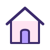

<!DOCTYPE html>
<html lang="de">
<head>
<meta charset="UTF-8">
<meta name="viewport" content="width=device-width, initial-scale=1, viewport-fit=cover, user-scalable=no">
<title>Wimmelbild-Detektiv</title>
<link rel="stylesheet" href="schrift/schrift.css">
<style>
:root{--nacht:#3B2A6B;--weich:#6B5C96;--paper:#FFFFFF;--bg:#CDEFFF;--rahmen:#2B2350;--rosa:#FF8ACB;--mint:#7FE8C8;--sonne:#FFD95A;
  --gram:#3DB98F;--gram-s:#2A8E6C;
  font-size:calc(100vh / 108)}   /* 1rem = 10 px bei 1080 px Höhe, 8 px bei 864 px */
*{box-sizing:border-box;margin:0;padding:0;-webkit-tap-highlight-color:transparent}
html,body{height:100%;overflow:hidden;overscroll-behavior:none}
body{font-family:"Andika","Baloo 2",sans-serif;color:var(--nacht);background:var(--rahmen);
  user-select:none;-webkit-user-select:none;-webkit-touch-callout:none;touch-action:none}
button{font:inherit;color:inherit;border:0;background:none;cursor:pointer}
img{display:block}
/* Querformat: links das Bild in voller Höhe, rechts die Leiste mit dem ganzen restlichen Platz */
.app{position:fixed;inset:0;display:flex}
.stage{position:relative;flex:none;height:100%;width:calc(100% - 30rem);overflow:hidden;background:var(--rahmen)}
.stage.shake{animation:shake .5s}
@keyframes shake{0%,100%{transform:none}15%{transform:translateX(-1.4rem) rotate(-1deg)}35%{transform:translateX(1.2rem) rotate(.8deg)}55%{transform:translateX(-.8rem)}75%{transform:translateX(.5rem)}}
.world{position:absolute;left:0;top:0}
.world img{position:absolute;inset:0;width:100%;height:100%;display:block;pointer-events:none}
.world svg{position:absolute;inset:0;width:100%;height:100%;pointer-events:none;overflow:visible}
.world svg polygon.chk{fill:rgba(255,138,203,.18);stroke:#FF2E9A;stroke-width:2px;vector-effect:non-scaling-stroke}
.world svg polygon.hint{fill:rgba(255,217,90,.25);stroke:#FFD95A;stroke-width:4px;vector-effect:non-scaling-stroke;animation:hint 1.4s ease-out forwards}
@keyframes hint{0%,60%{opacity:1}100%{opacity:0}}
.world svg text{font:800 2.6px "Baloo 2",sans-serif;fill:#fff;stroke:#3B2A6B;stroke-width:.5px;paint-order:stroke;text-anchor:middle}
.piece{position:absolute;inset:0;pointer-events:none;z-index:2;filter:drop-shadow(0 .4rem .6rem rgba(0,0,0,.45))}
.piece i{position:absolute;inset:0;background-size:100% 100%}
.tag{position:absolute;z-index:3;transform:translate(-50%,-100%);background:var(--paper);color:var(--nacht);font:700 2.6rem/1 "Andika",sans-serif;
  padding:.5rem 1.2rem .4rem;border-radius:99rem;white-space:nowrap;box-shadow:0 .3rem 0 rgba(59,42,107,.25);pointer-events:none;animation:pop .35s cubic-bezier(.2,1.6,.4,1)}
@keyframes pop{from{transform:translate(-50%,-100%) scale(.3)}}
.leiste{position:relative;flex:1;min-width:30rem;container-type:inline-size;background:var(--bg);display:flex;flex-direction:column;align-items:center;
  padding:3rem 2.4rem 3.4rem;gap:2.4rem}
.leiste .oben{display:flex;gap:1.6rem;align-self:stretch;justify-content:space-between}
.rund{width:7rem;height:7rem;border-radius:50%;background:var(--paper);display:flex;align-items:center;justify-content:center;padding:1.5rem;
  box-shadow:0 .5rem 0 rgba(59,42,107,.15);text-decoration:none;flex:none}
.rund img{width:100%;height:100%}
.rund:active{transform:translateY(.3rem);box-shadow:0 .2rem 0 rgba(59,42,107,.15)}
.runde{display:flex;gap:.7rem;flex-wrap:wrap;justify-content:center;margin-top:1rem;min-height:1.5rem}
.runde i{width:1.5rem;height:1.5rem;border-radius:50%;background:rgba(59,42,107,.15)}
.runde i.da{background:var(--gram)}
.mitte{flex:1;min-height:0;align-self:stretch;display:flex;align-items:center;justify-content:center}
.card{max-width:100%;background:var(--paper);color:var(--nacht);border-radius:2.6rem;padding:2.6rem 3rem;font:700 min(6.4rem,11cqi)/1 "Andika",sans-serif;
  letter-spacing:.04em;white-space:nowrap;box-shadow:0 .9rem 0 var(--gram-s);transform:rotate(-2deg);touch-action:none;cursor:grab;transition:opacity .25s,transform .25s}
.card.away{opacity:0}
.card.hide{opacity:0;transform:rotate(-2deg) scale(.6);pointer-events:none}
.ghost{position:fixed;z-index:20;pointer-events:none;margin:0;transform:translate(-50%,-50%) scale(1.08);box-shadow:0 1.6rem 2.6rem rgba(59,42,107,.4);transition:none}
.hilfe{height:7rem;padding:0 2.8rem;border-radius:99rem;background:var(--paper);font:700 2.4rem/1 "Andika",sans-serif;display:flex;align-items:center;gap:1rem;
  box-shadow:0 .5rem 0 rgba(59,42,107,.15);flex:none}
.hilfe img{width:4rem;height:4rem}
.hilfe:active{transform:translateY(.3rem);box-shadow:0 .2rem 0 rgba(59,42,107,.15)}
.bin{width:100%;height:20rem;flex:none;border-radius:3rem;border:.5rem dashed rgba(59,42,107,.3);display:flex;flex-direction:column;align-items:center;justify-content:center;gap:.6rem;
  font:700 2.2rem/1 "Andika",sans-serif;color:var(--weich);transition:background .15s,border-color .15s,transform .15s}
.bin img{width:8rem;height:8rem}
.bin.open{transform:scale(1.04);background:#FFF2BF;border-color:rgba(59,42,107,.55)}
.bin.hide,.hilfe.hide{visibility:hidden}
.hilfe{transition:opacity .8s,visibility .8s}
.hilfe.hide{opacity:0;transition:none}
.info{position:fixed;left:1.6rem;top:1.6rem;background:var(--paper);padding:.8rem 1.6rem;border-radius:1.2rem;font-weight:700;font-size:2.2rem;z-index:5}
.links{display:flex;flex-wrap:wrap;gap:1rem;justify-content:center}
.links a{background:var(--paper);color:var(--nacht);border-radius:1.2rem;padding:1rem 1.6rem;font-weight:700;font-size:2.2rem;text-decoration:none}
.pause{position:fixed;inset:0;z-index:25;background:#1F1B45;display:none;opacity:0;transition:opacity .6s}
.pause.on{display:block}.pause.show{opacity:1}
.pause img{position:absolute;inset:0;width:100%;height:100%;object-fit:cover}
.pbar{position:absolute;left:30%;width:40%;bottom:3rem;height:1.2rem;border-radius:99rem;background:rgba(59,42,107,.35);box-shadow:0 0 0 .2rem rgba(59,42,107,.35);overflow:hidden}
.pfill{height:100%;width:0;border-radius:99rem;background:#fff}
.pause.show .pfill{animation:pfill var(--pause-ms,10s) linear forwards}
@keyframes pfill{from{width:0}to{width:100%}}
.eltern{position:fixed;inset:0;z-index:40;overflow:auto;background:var(--bg);padding:3rem 4rem 4rem;user-select:text;-webkit-user-select:text;touch-action:auto;font-size:2rem}
.eltern h1{font:800 4rem/1.1 "Baloo 2",sans-serif}.eltern h2{font:800 2.8rem/1.1 "Baloo 2",sans-serif;margin:2.4rem 0 .6rem}.eltern p{margin:1rem 0;font-weight:700;max-width:70ch}
.eltern ul{list-style:none}.eltern li{background:var(--paper);border-radius:1rem;padding:.6rem 1.4rem;margin:.6rem 0;font-weight:700}
.eltern small{font-weight:400;opacity:.75}
@media (prefers-reduced-motion:reduce){.pause{transition:none}}
</style>
</head>
<body>
<div class="app">
  <div class="stage" id="stage">
    <div class="world" id="world">
      
      <svg id="svg" viewBox="0 0 100 100" preserveAspectRatio="none"></svg>
    </div>
  </div>
  <aside class="leiste" id="bar">
    <div class="oben">
      <a class="rund" href="index.html" aria-label="Alle Spiele"></a>
      <button class="rund" id="snd" aria-label="Ton"></button>
    </div>
    <div class="runde" id="punkte" aria-label="Runde"></div>
    <div class="mitte" id="mitte"><button class="card hide" id="card"></button></div>
    <button class="hilfe hide" id="hilfe">Hilfe</button>
    <div class="bin hide" id="bin">Kein Nomen</div>
  </aside>
</div>
<div class="pause" id="pause">
  
  <div class="pbar"><div class="pfill"></div></div>
</div>

<script type="module">
import {lade, speichere, sperreTouch, esc, merkeGelernt} from "./lernspiel.js";
sperreTouch();
(async function(){
  // ---------- Einstellungen ----------
  const N_NOMEN = 5;        // Nomen je Runde
  const N_ANDERE = 5;       // Nicht-Nomen je Runde (davon bis zu ANDERE_BILD aus der Liste des Bildes)
  const ANDERE_BILD = 2;
  const TOLERANZ = 5;       // Treffer-Rand um das Ding, in % der Bildbreite (großzügig: knapp daneben zählt)
  const TOLERANZ_MIN = 8;   // Treffer-Rand mindestens so viele rem (Kinderfinger, kleiner Bildschirm)
  const LIFT = 40;          // so viele px schwebt das Kärtchen über dem Finger
  // Wiedervorlage über Tage (Fächer): richtig beim ersten Versuch → ein Fach weiter, Fehler → zurück in Fach 0.
  // ABSTAND[f] = so viele Tage nach der letzten Beförderung ist ein Wort in Fach f wieder fällig. Ab Fach GELERNT gilt es als gelernt.
  const ABSTAND = [0, 1, 3, 7, 21];
  const GELERNT = 4;
  const ANTEIL_FAELLIG = 0.7;  // so viel der Runde aus fälligen/wackeligen Wörtern, der Rest aus sicheren
  const WIEDER_NACH = 3;       // ein falsch gelöstes Wort kommt in derselben Runde nach so vielen anderen noch einmal
  const WIEDER_MAX = 4;        // höchstens so viele Wiederholungen je Runde (damit die Runde kurz bleibt)
  const HILFE_MS = 15000;   // Vorlese-Hilfe erst nach so langer Zeit je Wort zeigen: erst selbst lesen
  const PAUSE_MS = 10000;   // Szenenpause nach jeder Runde: Einhornbild so lange, dann kommt die nächste Szene
  // Nicht-Nomen: keine Wörter, die in GROSSBUCHSTABEN auch Nomen sein könnten (LAUT, WILD, ARM, GELB …)
  const ALLGEMEIN = [
    "lacht","rennt","singt","springt","spielt","schläft","malt","liest","schreibt","isst","trinkt","tanzt","klettert","hüpft",
    "ruft","sucht","findet","baut","kocht","weint","kichert","flüstert","wackelt","rollt","fällt","schaut","hört","kommt","hilft",
    "klein","groß","schnell","langsam","weich","hart","müde","lustig","fröhlich","leise","warm","kalt","nett","süß","schön",
    "frech","glatt","dick","dünn","nass","trocken",
    "und","oder","mit","hier","dort","oft","sehr","auch","unter","über","neben","aber","gern","bald"];

  const $ = id => document.getElementById(id);
  const pruefen = new URLSearchParams(location.search).has("pruefen");
  const shuffle = a => { for(let i=a.length-1;i>0;i--){ const j=Math.floor(Math.random()*(i+1)); [a[i],a[j]]=[a[j],a[i]]; } return a; };
  const wait = ms => new Promise(r=>setTimeout(r,ms));
  const key = d => d.artikel+" "+d.wort;
  const rnd = (a,b) => a+Math.random()*(b-a);

  // ---------- Speichern (lernspiel.js: Tauri-Datei oder localStorage "lernstand-wimmelbild") ----------
  let save = await lade("wimmelbild", {woerter:{}, bilder:{}, letztes:""});
  if(Array.isArray(save.woerter)) save.woerter={};
  if(Array.isArray(save.bilder)) save.bilder={};
  function persist(){ speichere("wimmelbild", save); }
  // Lernstand je Wort: Nomen als „der Hund“, Nicht-Nomen als „~rennt“.
  // Eintrag: {f: Fach, t: Tag der letzten Beförderung/Rückstufung "JJJJ-MM-TT", h: letzte 6 Versuche (1/0)}
  const heute = () => new Date().toLocaleDateString("sv");
  const tage = (a,b) => a ? Math.round((Date.parse(b)-Date.parse(a))/864e5) : 999;
  for(const [s,v] of Object.entries(save.woerter)){   // alter Spielstand: nur Liste der Versuche
    if(Array.isArray(v)) save.woerter[s] = {f: v.length>=2 && v.slice(-2).every(x=>x===1) ? 1 : 0, t:"", h:v};
  }
  const wkey = k => k.ding ? key(k.ding) : "~"+k.text;
  const eintrag = s => save.woerter[s] || {f:0, t:"", h:[]};
  const faellig = s => { const e=eintrag(s); return e.f===0 || tage(e.t, heute()) >= ABSTAND[Math.min(e.f, ABSTAND.length-1)]; };
  function record(k, firstTry){
    const s=wkey(k), e=save.woerter[s]||(save.woerter[s]={f:0,t:"",h:[]});
    e.h.push(firstTry?1:0); if(e.h.length>6) e.h.shift();
    if(!firstTry){ e.f=0; e.t=heute(); }
    else if(faellig(s)){ e.f=Math.min(e.f+1, GELERNT); e.t=heute(); }   // vorzeitig richtig (Wort war nicht fällig): Fach bleibt
    merkeGelernt(e, GELERNT);   // g=1 bleibt auch nach späterer Rückstufung (für den Fortschritt)
    persist();
  }
  // Runde mischen: zuerst fällige Wörter (niedriges Fach zuerst), Rest aus sicheren
  function mische(liste, keyOf, n){
    const due=shuffle(liste.filter(x=>faellig(keyOf(x)))).sort((a,b)=>eintrag(keyOf(a)).f-eintrag(keyOf(b)).f);
    const sicher=shuffle(liste.filter(x=>!faellig(keyOf(x))));
    const nDue=Math.min(due.length, Math.ceil(n*ANTEIL_FAELLIG));
    const out=due.slice(0,nDue).concat(sicher.slice(0,n-nDue));
    return out.concat(due.slice(nDue)).slice(0,n);   // reicht der sichere Rest nicht, mit fälligen auffüllen
  }

  // ---------- Ton und Stimme ----------
  let sound = true; try{ sound = localStorage.getItem("wimmelbild-ton")!=="aus"; }catch(e){}
  const sndBtn=$("snd"); const showSnd=()=>$("sndimg").src=sound?"symbole/ton-an.svg":"symbole/ton-aus.svg"; showSnd();
  sndBtn.addEventListener("click",()=>{ sound=!sound; showSnd(); try{ localStorage.setItem("wimmelbild-ton",sound?"an":"aus"); }catch(e){} if(!sound) window.speechSynthesis?.cancel(); });
  let actx;
  function tone(f1,f2,dur,type="sine",vol=.18){ if(!sound) return; try{ actx=actx||new (window.AudioContext||window.webkitAudioContext)();
    const o=actx.createOscillator(), g=actx.createGain(), t=actx.currentTime; o.type=type;
    o.frequency.setValueAtTime(f1,t); o.frequency.exponentialRampToValueAtTime(f2,t+dur*.8);
    g.gain.setValueAtTime(.0001,t); g.gain.exponentialRampToValueAtTime(vol,t+.01); g.gain.exponentialRampToValueAtTime(.0001,t+dur);
    o.connect(g).connect(actx.destination); o.start(t); o.stop(t+dur+.02); }catch(e){} }
  const sfx = {
    plopp: ()=>tone(520,880,.18),
    boing: ()=>{ tone(180,420,.12,"triangle",.25); setTimeout(()=>tone(420,140,.28,"triangle",.22),110); },
    happs: ()=>{ tone(600,200,.15,"square",.08); setTimeout(()=>tone(300,700,.12,"sine",.12),140); }
  };
  // Stimme: beste deutsche Systemstimme (Premium > Erweitert > kompakt). Eloquence- und Spaßstimmen von Apple
  // (Eddy, Flo, Grandma, Reed, Sandy, Shelley, Zarvox …) klingen nach 90er-Synthesizer und fallen raus.
  // In der Elternansicht (?eltern) lässt sich eine Stimme fest wählen; gilt auf dem Gerät für alle Einhorn-Spiele.
  const SCHLECHT = /eddy|flo\b|grandma|grandpa|oma|opa|reed|rocko|sandy|shelley|eloquence|albert|bad news|bahh|bells|boing|bubbles|cellos|good news|jester|organ|superstar|trinoids|whisper|wobble|zarvox|fred|junior|kathy|ralph|novelty/i;
  function stimmWert(v){
    const n=(v.name+" "+v.voiceURI);
    if(SCHLECHT.test(n)) return -1;
    let w=0;
    if(/premium/i.test(n)) w+=40; else if(/enhanced|erweitert|verbessert|natural|neural/i.test(n)) w+=25;
    if(/google/i.test(n)) w+=15;
    if(/de[-_]DE/i.test(v.lang)) w+=5;
    if(/anna|helena|petra|marlene|katja|martin|markus|yannick|viktor/i.test(n)) w+=3;
    return w;
  }
  const deutscheStimmen = () => (window.speechSynthesis?.getVoices()||[]).filter(v=>/^de/i.test(v.lang));
  // Gespeichert wird Position + Name + Kennung: Safari meldet z. B. zwei „Anna“ (kompakt und Premium) mit gleicher Kennung.
  // "system" = keine Stimme vorgeben, nur Deutsch – dann wählt das System (Windows: Standardstimme der Sprachausgabe).
  let voice=null, stimmWahl="";
  const stimmSchluessel = (v,i) => i+"|"+v.name+"|"+v.voiceURI;
  function pickVoice(){
    const vs=deutscheStimmen(); let fest=""; try{ fest=localStorage.getItem("einhorn-stimme")||""; }catch(e){}
    stimmWahl=fest;
    if(fest==="system"){ voice=null; return; }
    const i=vs.findIndex((v,k)=>stimmSchluessel(v,k)===fest);
    voice = i>=0 ? vs[i] : (vs.filter(v=>stimmWert(v)>=0).sort((a,b)=>stimmWert(b)-stimmWert(a))[0] || null);
  }
  if(window.speechSynthesis){ pickVoice(); speechSynthesis.onvoiceschanged=()=>{ pickVoice(); window.dispatchEvent(new Event("stimmen")); }; }
  function say(text){ if(!sound||!window.speechSynthesis) return; try{ speechSynthesis.cancel(); const u=new SpeechSynthesisUtterance(text); u.lang="de-DE"; if(voice) u.voice=voice; u.rate=.85; u.pitch=1; speechSynthesis.speak(u); }catch(e){} }

  // ---------- Bilder laden ----------
  let namen=[]; const bilder={};
  try{ namen = await (await fetch("bilder/index.json",{cache:"no-store"})).json(); }catch(e){}
  await Promise.all(namen.map(async n=>{ try{ bilder[n]=await (await fetch(`bilder/${n}.json`,{cache:"no-store"})).json(); }catch(e){} }));
  namen = namen.filter(n=>bilder[n]);
  if(!namen.length){ $("mitte").textContent="Keine Bilder gefunden (bilder/index.json)."; return; }

  function chooseBild(){
    const forced=new URLSearchParams(location.search).get("bild"); if(forced && bilder[forced]) return forced;
    // Reihum: das am längsten nicht gespielte Bild (nie gespielte zuerst, in zufälliger Reihenfolge).
    // Bilder ohne fällige Wörter nur, wenn es keine anderen gibt; nie zweimal dasselbe hintereinander.
    let c = namen.length>1 ? namen.filter(n=>n!==save.letztes) : namen.slice();
    const offen = n => bilder[n].dinge.some(d=>faellig(key(d)));
    if(c.some(offen)) c = c.filter(offen);
    c = shuffle(c).sort((a,b)=> (save.bilder[a]||0)-(save.bilder[b]||0));
    return c[0];
  }

  // ---------- Formen ----------
  // Ein Bereich ist [x1,y1,x2,y2] in % oder eine Liste von Punkten [[x,y],...] in %.
  function poly(f){
    if(typeof f[0]==="number"){ const [x1,y1,x2,y2]=f, cx=(x2-x1)*.25, cy=(y2-y1)*.25;
      return [[x1+cx,y1],[x2-cx,y1],[x2,y1+cy],[x2,y2-cy],[x2-cx,y2],[x1+cx,y2],[x1,y2-cy],[x1,y1+cy]]; }
    return f;
  }
  function bbox(f){ const p=poly(f), xs=p.map(q=>q[0]), ys=p.map(q=>q[1]); return [Math.min(...xs),Math.min(...ys),Math.max(...xs),Math.max(...ys)]; }
  const clip = f => "polygon("+poly(f).map(([x,y])=>`${x}% ${y}%`).join(",")+")";
  const pts = f => poly(f).map(([x,y])=>`${x},${y}`).join(" ");
  const SVGNS="http://www.w3.org/2000/svg";

  // ---------- Bühne: das ganze Bild in voller Höhe, ohne Zoom ----------
  // Breite aus dem Seitenverhältnis, höchstens bis die Leiste noch 30rem hat; sonst eingepasst mit Rand.
  const stage=$("stage"), world=$("world"), img=$("img"), svg=$("svg"), cardEl=$("card"), bin=$("bin"), bar=$("bar"), hilfeBtn=$("hilfe"), punkte=$("punkte");
  let bild=null, ar=2/3;
  const rem = () => parseFloat(getComputedStyle(document.documentElement).fontSize) || 10;
  function fullView(){   // einzige Einpassung: Bühne = Bildbreite, Bild mittig darin
    const H=innerHeight, maxW=Math.max(0, innerWidth-30*rem());
    const bw=Math.min(maxW, H*ar), bh=bw/ar;
    stage.style.width=bw+"px";
    world.style.width=bw+"px"; world.style.height=bh+"px";
    world.style.left="0px"; world.style.top=((H-bh)/2)+"px";
  }
  function toPct(cx,cy){ const r=world.getBoundingClientRect(); return [(cx-r.left)/r.width*100,(cy-r.top)/r.height*100]; }
  function overStage(cx,cy){ const r=stage.getBoundingClientRect(); return cx>=r.left&&cx<=r.right&&cy>=r.top&&cy<=r.bottom; }
  function overBin(cx,cy){ const r=bin.getBoundingClientRect(), m=22; return cx>=r.left-m&&cx<=r.right+m&&cy>=r.top-m&&cy<=r.bottom+m; }
  // px/py in % von Bildbreite/-höhe; y-Abstand /ar → ebenfalls in % der Bildbreite, damit TOLERANZ in beide Richtungen gleich weit reicht
  // Toleranz mindestens TOLERANZ_MIN rem (Kinderfinger), umgerechnet in % der aktuellen Bildbreite
  function onThing(d,px,py){
    const bw=world.clientWidth, tol=Math.max(TOLERANZ, bw ? TOLERANZ_MIN*rem()/bw*100 : 0);
    return d.formen.some(f=>{ const [x1,y1,x2,y2]=bbox(f); const dx=Math.max(x1-px,0,px-x2), dy=Math.max(y1-py,0,py-y2)/ar; return dx<=tol && dy<=tol; });
  }
  addEventListener("resize",()=>{ if(bild && !pruefen){ fullView(); passeKarte(); } });

  function hint(d){ for(const f of d.formen){ const p=document.createElementNS(SVGNS,"polygon"); p.setAttribute("points",pts(f)); p.setAttribute("class","hint"); svg.appendChild(p); setTimeout(()=>p.remove(),1500); } }

  // Ding lebendig werden lassen: der Ding-Bereich als Kopie an Ort und Stelle über dem Bild, leicht vergrößert
  function beleben(d){
    if(matchMedia("(prefers-reduced-motion: reduce)").matches) return;
    const H=world.clientHeight;
    const art = d.bewegung || ["huepfen","wackeln","wachsen","drehen"][Math.floor(Math.random()*4)];
    for(const f of d.formen){
      const [x1,y1,x2,y2]=bbox(f), cx=(x1+x2)/2, cy=(y1+y2)/2, hh=(y2-y1)/100*H;
      const w=document.createElement("div"); w.className="piece";
      const i=document.createElement("i"); i.style.backgroundImage=`url("${img.src}")`; i.style.clipPath=i.style.webkitClipPath=clip(f);
      w.appendChild(i); world.insertBefore(w, svg);
      w.style.transformOrigin = art==="drehen"||art==="wachsen" ? `${cx}% ${cy}%` : `${cx}% ${y2}%`;
      const up=Math.max(hh*.35, H*.015), S="scale(1.15)";
      const K = {
        huepfen:[{transform:"none"},{transform:`translateY(${-up}px) ${S}`,offset:.3},{transform:S,offset:.55},{transform:`translateY(${-up/2}px) ${S}`,offset:.75},{transform:"none"}],
        wackeln:[{transform:"none"},{transform:`rotate(-10deg) ${S}`,offset:.2},{transform:`rotate(9deg) ${S}`,offset:.45},{transform:`rotate(-5deg) ${S}`,offset:.7},{transform:"none"}],
        wachsen:[{transform:"none"},{transform:"scale(1.3)",offset:.4},{transform:"scale(1.2)",offset:.6},{transform:"none"}],
        drehen:[{transform:"none"},{transform:"rotate(180deg) scale(1.25)",offset:.5},{transform:"rotate(360deg)"}]
      }[art] || [{transform:"none"},{transform:"scale(1.25)"},{transform:"none"}];
      w.animate(K,{duration:1100,easing:"ease-in-out"}).finished.then(()=>w.remove(),()=>w.remove());
    }
  }
  function tagFor(d){
    const [x1,y1,x2]=bbox(d.formen[0]);
    const t=document.createElement("div"); t.className="tag"; t.textContent=key(d);
    t.style.left=Math.min(85,Math.max(15,(x1+x2)/2))+"%"; t.style.top=Math.max(3,y1)+"%";
    world.appendChild(t);
  }

  // ---------- Runde: ein Wort nach dem anderen ----------
  let pauseBild=null, karten=[], idx=0, cur=null, busy=true, fehler=0;
  async function runde(){
    const name=chooseBild(); bild=bilder[name];
    save.letztes=name; save.bilder[name]=Date.now(); persist();
    world.querySelectorAll(".tag,.piece").forEach(e=>e.remove()); svg.innerHTML="";
    cardEl.style.display="";
    img.src="bilder/"+bild.bild;
    await img.decode().catch(()=>{});
    ar = img.naturalWidth && img.naturalHeight ? img.naturalWidth/img.naturalHeight : 2/3;

    bild.dinge.forEach(d=>d.gefunden=false);
    const nomen=mische(bild.dinge, key, N_NOMEN);
    const ausBild=mische(bild.andere||[], w=>"~"+w, ANDERE_BILD);
    const andere=ausBild.concat(mische(ALLGEMEIN.filter(w=>!ausBild.includes(w)), w=>"~"+w, N_ANDERE-ausBild.length));
    karten=shuffle([...nomen.map(d=>({text:d.wort, ding:d})), ...andere.map(w=>({text:w, ding:null}))]);
    idx=0;
    fullView();
    await wait(50);
    bin.classList.remove("hide");
    zeigeWort();
    // Pausenbild der nächsten Szene schon mal laden, damit es sofort da ist
    pauseBild=null;
    if(bild.pause){ pauseBild=new Image(); pauseBild.src="bilder/"+bild.pause; }
  }
  // Rundenpunkte: einer je Kärtchen (Wiederholungen kommen dazu), erledigte grün
  function zeigePunkte(){ punkte.innerHTML=karten.map((k,i)=>`<i${i<idx?' class="da"':""}></i>`).join(""); }
  // Lange Wörter: Schrift so weit verkleinern, dass das Kärtchen in die Leiste passt
  function passeKarte(){
    cardEl.style.fontSize="";
    const platz=$("mitte").clientWidth*.94, breit=cardEl.scrollWidth;   // .94: Platz für die leichte Drehung
    if(platz && breit>platz){ const fs=parseFloat(getComputedStyle(cardEl).fontSize); cardEl.style.fontSize=Math.floor(fs*platz/breit)+"px"; }
  }
  // Hilfe-Knopf je Wort erst nach HILFE_MS einblenden – erst, wenn das Kind es wirklich nicht lesen kann
  let hilfeTimer=0;
  function hilfeVerstecken(){ clearTimeout(hilfeTimer); hilfeBtn.classList.add("hide"); }
  function zeigeWort(){
    cur=karten[idx]; fehler=0;
    hilfeVerstecken();
    hilfeTimer=setTimeout(()=>hilfeBtn.classList.remove("hide"), HILFE_MS);
    zeigePunkte();
    cardEl.textContent=cur.text.toUpperCase();
    passeKarte();
    cardEl.classList.add("hide");
    setTimeout(()=>{ cardEl.classList.remove("hide","away"); busy=false; }, 350);
  }
  async function weiter(){
    // Falsch gelöst: dasselbe Wort kommt in dieser Runde noch einmal (zählt dann nicht für den Lernstand)
    if(fehler>0 && !cur.wdh && karten.filter(k=>k.wdh).length<WIEDER_MAX) karten.splice(Math.min(karten.length, idx+1+WIEDER_NACH), 0, {...cur, wdh:true});
    idx++; zeigePunkte();
    if(idx<karten.length){ await wait(900); zeigeWort(); }
    else { await wait(1100); szenenpause(); }
  }

  // ---------- Ziehen ----------
  let drag=null;
  cardEl.addEventListener("pointerdown",e=>{
    if(busy||drag) return;
    e.preventDefault();
    const g=cardEl.cloneNode(true); g.removeAttribute("id"); g.classList.add("ghost"); g.classList.remove("hide");
    g.style.fontSize=getComputedStyle(cardEl).fontSize;   // außerhalb der Leiste gilt 11cqi nicht mehr
    g.style.left=e.clientX+"px"; g.style.top=(e.clientY-LIFT)+"px";
    document.body.appendChild(g); cardEl.classList.add("away");
    drag={g,id:e.pointerId};
    try{ cardEl.setPointerCapture(e.pointerId); }catch(_){}
  });
  cardEl.addEventListener("pointermove",e=>{
    if(!drag||e.pointerId!==drag.id) return;
    const x=e.clientX, y=e.clientY-LIFT;
    drag.g.style.left=x+"px"; drag.g.style.top=y+"px";
    bin.classList.toggle("open", overBin(x,y));
  });
  cardEl.addEventListener("pointerup",e=>ende(e,false));
  cardEl.addEventListener("pointercancel",e=>ende(e,true));

  function ende(e,cancel){
    if(!drag||e.pointerId!==drag.id) return;
    const g=drag.g; drag=null; bin.classList.remove("open");
    const x=e.clientX, y=e.clientY-LIFT;
    if(cancel){ zurueck(g); return; }
    if(overBin(x,y)){
      if(cur.ding){ fehler++; ausspucken(g); hilfe(); } // Nomen in den Mülleimer: kommt wieder raus
      else wegwerfen(g);                                // Nicht-Nomen: Mülleimer schluckt es
      return;
    }
    if(overStage(x,y)){
      if(!cur.ding){ fehler++; abprallen(g); hilfe(); return; }  // Nicht-Nomen aufs Bild: deutliche Abwehr
      const [px,py]=toPct(x,y);
      if(onThing(cur.ding,px,py)){ treffer(g); return; }
      hint(cur.ding);                                   // Nomen daneben: kein Fehler, nur ein Hinweis
    }
    zurueck(g);
  }
  // Hilfe-Leiter: 1. Fehler nur das Signal, 2. Fehler die Artikelprobe zum Hören, ab dem 3. die Lösung mit Grund.
  // Ausführen muss das Kind selbst; ein Wort mit Fehler zählt nicht als gekonnt.
  function hilfe(){
    const w=cur.text, W=w[0].toUpperCase()+w.slice(1);
    // Probe mit „ein/eine“, nicht mit „der“: „der rennt“ geht als Satz („Der rennt schnell.“), „ein rennt“ nicht.
    if(fehler===2) setTimeout(()=>say(`ein ${w}? eine ${w}? Hör mal, ob das passt.`), 500);
    else if(fehler>=3){
      if(cur.ding){ const ein = cur.ding.artikel==="die" ? "eine" : "ein";
        setTimeout(()=>{ say(`${ein} ${W}. Das passt. ${W} ist ein Ding. Such es im Bild!`); hint(cur.ding); }, 500); }
      else { setTimeout(()=>{ say(`ein ${w}? Das passt nicht. ${W} ist kein Ding. Ab in den Mülleimer!`);
        bin.animate([{transform:"none"},{transform:"scale(1.08)",background:"#FFF2BF",offset:.3},{transform:"none",offset:.6},{transform:"scale(1.08)",background:"#FFF2BF",offset:.8},{transform:"none"}],{duration:1400}); }, 500); }
    }
  }
  // Hilfe-Knopf: liest das Wort vor (lange Wörter sind schwer zu lesen). Kein Fehler, kein Hinweis auf die Lösung.
  hilfeBtn.addEventListener("click",()=>{ if(cur && !busy) say(cur.text); });
  function homeOf(){ const r=cardEl.getBoundingClientRect(); return [r.left+r.width/2, r.top+r.height/2]; }
  function zurueck(g,ms=380,easing="cubic-bezier(.3,.7,.4,1)"){
    const [hx,hy]=homeOf();
    g.animate([{left:g.style.left,top:g.style.top},{left:hx+"px",top:hy+"px"}],{duration:ms,easing}).finished.then(()=>{ g.remove(); cardEl.classList.remove("away"); });
  }
  function abprallen(g){
    busy=true; sfx.boing();
    stage.classList.remove("shake"); void stage.offsetWidth; stage.classList.add("shake");
    g.animate([{transform:"translate(-50%,-50%) scale(1.08)"},{transform:"translate(-50%,-50%) scale(1.25) rotate(-12deg)",offset:.25},{transform:"translate(-50%,-50%) scale(.95) rotate(8deg)",offset:.55},{transform:"translate(-50%,-50%) scale(1.08)"}],{duration:450});
    setTimeout(()=>{ zurueck(g,500,"cubic-bezier(.2,1.5,.4,1)"); setTimeout(()=>busy=false,520); }, 380);
  }
  function ausspucken(g){
    busy=true; sfx.boing();
    const r=bin.getBoundingClientRect();
    g.style.left=(r.left+r.width/2)+"px"; g.style.top=(r.top+r.height/2)+"px";
    bin.animate([{transform:"none"},{transform:"rotate(-4deg) scale(1.06)",offset:.3},{transform:"rotate(3deg)",offset:.6},{transform:"none"}],{duration:500});
    g.animate([{transform:"translate(-50%,-50%) scale(.6)"},{transform:"translate(-50%,-160%) scale(1.15) rotate(-10deg)",offset:.5},{transform:"translate(-50%,-50%) scale(1.08)"}],{duration:450});
    setTimeout(()=>{ zurueck(g,450,"cubic-bezier(.2,1.4,.4,1)"); setTimeout(()=>busy=false,470); }, 420);
  }
  function wegwerfen(g){
    busy=true; sfx.happs();
    if(!cur.wdh) record(cur, fehler===0);
    const r=bin.getBoundingClientRect();
    g.animate([{left:g.style.left,top:g.style.top,opacity:1,transform:"translate(-50%,-50%) scale(1.08)"},
               {left:(r.left+r.width/2)+"px",top:(r.top+r.height/2)+"px",opacity:0,transform:"translate(-50%,-50%) scale(.2) rotate(25deg)"}],{duration:350,easing:"ease-in"}).finished.then(()=>g.remove());
    setTimeout(()=>bin.animate([{transform:"none"},{transform:"scale(1.06,.92)",offset:.4},{transform:"none"}],{duration:350}),300);
    cardEl.classList.add("hide"); cardEl.classList.remove("away");
    weiter();
  }
  function treffer(g){
    busy=true; const d=cur.ding;
    if(!cur.wdh) record(cur, fehler===0);
    g.animate([{opacity:1},{opacity:0,transform:"translate(-50%,-50%) scale(.4)"}],{duration:250}).finished.then(()=>g.remove());
    cardEl.classList.add("hide"); cardEl.classList.remove("away");
    sfx.plopp(); say(key(d)); if(!d.gefunden) tagFor(d); beleben(d);
    d.gefunden=true;
    weiter();
  }

  // Alle Wörter durch: Einhornbild als Szenenpause (ohne Knöpfe), dann direkt die nächste Szene
  async function szenenpause(){
    bin.classList.add("hide"); hilfeVerstecken(); cardEl.style.display="none";
    if(!bild.pause){ runde(); return; }
    const el=$("pause"), im=$("pimg");
    im.src=pauseBild ? pauseBild.src : "bilder/"+bild.pause;
    await im.decode().catch(()=>{});
    el.style.setProperty("--pause-ms", PAUSE_MS+"ms");
    el.classList.add("on"); void el.offsetWidth; el.classList.add("show");
    await wait(PAUSE_MS);
    await runde();                       // nächste Szene hinter dem Bild vorbereiten
    el.classList.remove("show"); await wait(650); el.classList.remove("on");
  }

  // ---------- Prüfansicht (?pruefen[&bild=name]) ----------
  async function pruefansicht(){
    bild=bilder[chooseBild()]; img.src="bilder/"+bild.bild; await img.decode().catch(()=>{});
    ar=img.naturalWidth/img.naturalHeight; fullView();
    addEventListener("resize", fullView);
    for(const d of bild.dinge) for(const f of d.formen){
      const p=document.createElementNS(SVGNS,"polygon"); p.setAttribute("points",pts(f)); p.setAttribute("class","chk"); svg.appendChild(p);
      const [x1,y1,x2,y2]=bbox(f); const t=document.createElementNS(SVGNS,"text");
      t.setAttribute("x",(x1+x2)/2); t.setAttribute("y",(y1+y2)/2+1); t.setAttribute("transform-origin",`${(x1+x2)/2} ${(y1+y2)/2}`);
      t.setAttribute("transform",`scale(1 ${ar})`); t.textContent=d.wort; svg.appendChild(t);
    }
    bar.innerHTML=`<div class="links">${namen.map(n=>`<a href="?pruefen&bild=${esc(n)}">${esc(n)}</a>`).join("")}</div>`;
    const info=document.createElement("div"); info.className="info"; info.textContent="Tippen zeigt x / y in %"; document.body.appendChild(info);
    stage.addEventListener("pointerdown",e=>{ const [x,y]=toPct(e.clientX,e.clientY); const d=bild.dinge.find(d=>onThing(d,x,y)); info.textContent=`x ${x.toFixed(1)} · y ${y.toFixed(1)}`+(d?` · ${d.wort}`:""); });
  }

  // ---------- Elternansicht (?eltern): welche Wörter gerade wackeln. Das Kind sieht davon nichts. ----------
  function elternansicht(){
    const zeile = ([s,e]) => `<li>${s.startsWith("~") ? esc(s.slice(1))+" <small>(kein Nomen)</small>" : esc(s)}
      <small>· Fach ${esc(e.f)}${e.t?" seit "+esc(e.t):""}${faellig(s)&&e.f<GELERNT?" · fällig":""} · zuletzt ${(e.h||[]).map(x=>x?"✓":"✗").join("")}</small></li>`;
    const alle=Object.entries(save.woerter).map(([s,v])=>[s,eintrag(s)]);
    const gruppe=(titel,l)=>`<h2>${titel} (${l.length})</h2><ul>${l.map(zeile).join("")||"<li>–</li>"}</ul>`;
    const el=document.createElement("div"); el.className="eltern";
    el.innerHTML=`<h1>Lernstand Wimmelbild</h1><p>Fach 0 = wackelt (zuletzt falsch oder neu), Fach 1–3 = wird gefestigt, ab Fach ${GELERNT} = gelernt.
      Abstände: ${ABSTAND.join(" / ")} Tage. Gespeichert auf diesem Gerät.</p>`
      + gruppe("Wackelt", alle.filter(([s,e])=>e.f===0))
      + gruppe("Wird gefestigt", alle.filter(([s,e])=>e.f>0&&e.f<GELERNT).sort((a,b)=>a[1].f-b[1].f))
      + gruppe("Gelernt", alle.filter(([s,e])=>e.f>=GELERNT))
      + `<h2>Stimme auf diesem Gerät</h2>
      <p>Weitere Stimmen: in Windows unter Einstellungen › Zeit und Sprache › Sprache und Region bzw. › Sprachausgabe
      eine deutsche Stimme hinzufügen (z. B. „Microsoft Katja“ oder „Microsoft Hedda“), dann die App neu starten.
      Installierte Stimmen erscheinen in der Liste unten. Gilt für alle Einhorn-Spiele auf diesem Gerät.</p><ul id="stimmen"></ul>`
      + `<p><a class="btn mint" href="wimmelbild.html">Zum Spiel</a></p>`;
    document.body.appendChild(el);
    const liste=el.querySelector("#stimmen");
    function zeigeStimmen(){
      const vs=deutscheStimmen();
      liste.innerHTML="";
      const zeile=(titel, info, aktiv, waehle)=>{
        const li=document.createElement("li");
        li.innerHTML=`${aktiv?"<b>Aktiv:</b> ":""}${titel} <small>${info}</small> `;
        const b=document.createElement("button"); b.className="btn mint"; b.style.cssText="font-size:1.8rem;padding:.6rem 1.8rem;margin-left:1rem"; b.textContent=aktiv?"Probe":"Wählen";
        b.onclick=()=>{ waehle(); sound=true; say("der Hund – die Katze – das Einhorn"); zeigeStimmen(); };
        li.appendChild(b); liste.appendChild(li);
      };
      zeile("Standardstimme des Geräts", "· Windows wählt selbst", stimmWahl==="system",
        ()=>{ try{ localStorage.setItem("einhorn-stimme","system"); }catch(e){} stimmWahl="system"; voice=null; });
      vs.forEach((v,k)=>zeile(`${k+1}. ${esc(v.name)}`,
        `· ${esc(v.lang)}${v.default?" · Standard":""}${v.localService===false?" · online":""}${stimmWert(v)<0?" · alt/Spaßstimme":""}<br>${esc(v.voiceURI)}`,
        stimmWahl!=="system" && voice===v,
        ()=>{ const key=stimmSchluessel(v,k); try{ localStorage.setItem("einhorn-stimme",key); }catch(e){} stimmWahl=key; voice=v; }));
    }
    zeigeStimmen(); window.addEventListener("stimmen", zeigeStimmen);
  }

  if(pruefen){ pruefansicht(); return; }
  if(new URLSearchParams(location.search).has("eltern")){ elternansicht(); return; }
  runde();
})();
</script>
</body>
</html>
